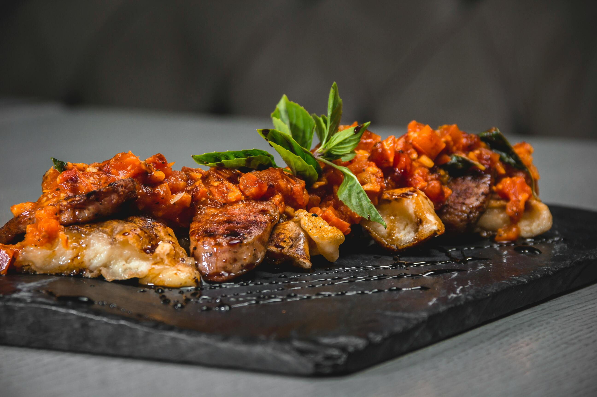

This dish brings together the bold, earthy flavors of Scotland with the vibrant
spices of a Thai-inspired red curry.
Highland Miso Salmon
A tender salmon fillet marinated in a unique blend of Scottish whisky
and Japanese miso, then seared to perfection. Served over a bed of seasonal seaweed salad with a touch
of wild herbs from the Highlands.

Seared Highland Steak with Tomato-Basil Chutney
This dish features tender, perfectly seared Highland steak, seasoned
with a blend of smoked salt and cracked pepper for a bold, rustic flavor. Topped with a vibrant
tomato-basil chutney, it combines the sweetness of ripe tomatoes with the fresh, herbaceous notes of
basil.
Matcha Cranachan
A reimagined version of the classic Scottish dessert, Cranachan, infused with
Japanese matcha. Layers of toasted oats, sweet honey, fresh raspberries, and a light matcha cream come
together to create a dessert that is both delicate and indulgent, combining the earthy flavor of matcha with
the natural sweetness of Scotland’s berries.
Menu Fushion
Highland Oyster with Whisky Ponzu
Fresh Highland oyster served with a delicate whisky-infused ponzu sauce,
topped
with seaweed and a touch of Scottish sea salt.
Venison Sashimi with Smoked Miso Sauce
Thinly sliced venison sashimi, marinated in lightly smoked miso, served with
pickled turnips and a wasabi cream.
Highland Lamb Red Curry with Fried Tofu
Tender Highland lamb in a rich red curry sauce with fresh green peppercorns
and
crispy fried tofu, garnished with Thai basil.
Matcha Cheesecake with Scottish Berry Coulis
A smooth matcha-infused cheesecake served with a tart coulis made from
Scottish
forest berries, balancing earthy and sweet flavors.
Menu Tasting
Venison Sashimi with Smoked Miso Sauce
Thinly sliced venison sashimi, marinated in lightly smoked miso, served with
pickled turnips and a wasabi cream.
Whisky-Soy Salmon
Tender Scottish salmon fillet marinated in a blend of aged whisky and soy,
grilled to a caramelized crust. Paired with steamed jasmine rice and a refreshing cucumber and
seaweed salad.
Matcha Cheesecake with Scottish Berry Coulis
A smooth matcha-infused cheesecake served with a tart coulis made from
Scottish
forest berries, balancing earthy and sweet flavors.
"Each menu is a journey through my heritage, blending the elegance of Japanese flavors with the
bold heart of Scotland. Every dish tells a story; all you have to do is take a bite."